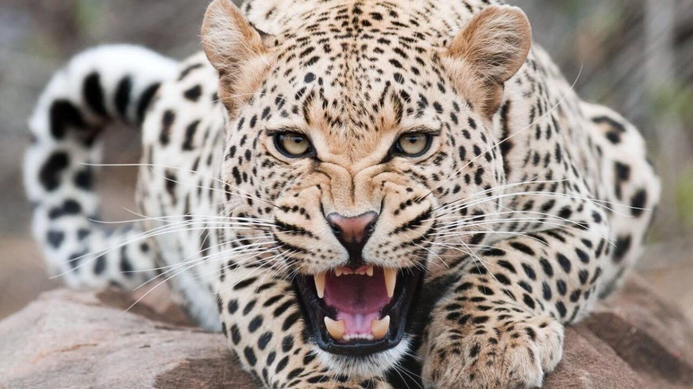

Portada
Portada
 El tigre
El tigre
 El león
El león
 El lobo
El lobo
 La pantera negra
La pantera negra

El leopardo (Panthera pardus) es un mamífero carnívoro de familia de los félidos. Al igual que tres de los demás félidos del género Panthera: el león, el tigre y el jaguar, están caracterizados por una modificación en el hueso hioides que les permite rugir. También se lo conoce como pantera parda y, cuando presenta un pelaje completamente oscuro como pantera negra.
El leopardo tiene una silueta bastante maciza, con la cabeza redonda y la cola larga y fina. Sus patas son potentes, con cuatro dedos en las posteriores y cinco en las anteriores, siendo todas sus garras retráctiles. Alcanzan de 91 cm a 1,91 m de longitud, más la cola que mide de 58 a 110 cm y una altura en la cruz de 45 a 78 cm. Los machos adultos llegan a pesar entre 37 y 90 kg, y las hembras de 28 a 60 kg.
| Portada
| El tigre
| El león
| El lobo
| La pantera negra
|